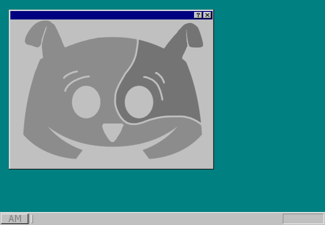

Otwierasz klient DISCORDA. To twoje ulubione miejsce do komunikacji z innymi członkami społeczności FANÓW PRZYGÓD REKSIA. Konkretnym obszarem twoich historycznych zainteresowań jest STARA SERIA, a dokładniej jej fandom. Uważasz, że stanowisz jego ważną część. Jesteś z tego dumny!
Społeczeństwa entuzjastów serii są liczne, ale niestabilne. Na obecną chwilę jest ich łącznie 14 - w zeszłym roku było 37. Przypominasz sobie PRZYGODY NAD PRZYGODAMI - SERWER PRZYGÓD REKSIA, który niestety upadł po tym jak jego administacja postanowiła unicestwić zarząd PRZYGÓD REKSIOWYCH, REKSIOWYCH PRZYGÓD i DISCO-REKSIA. W przypadku pierwszych dwóch destrukcja z użyciem MAGII i PRZEMOCY przebiegła pomyślnie, jednak DISCO-REKSIO zdołał obronić się przed atakiem i zniszczył agresora.
Czując się pewni siebie, użytkownicy DISCO-REKSIA spróbowali zagarnąć dla siebie jak najwięcej wpływów i zlecili zneutralizowanie administratorów REKSERWERA, KRETTOSTREFY, PRZYGÓD DISCORDA REKSIO, REKSIO DISCORDA PRZYGÓD i REKSOPOLIS. Doszło do krwawej wojny, w wyniku której jedynie bywalcy REKSOPOLIS i REKSIO DISCORDA PRZYGÓD pozostali przy życiu.
Postanowili zawrzeć między sobą pakt pokoju. Zgodnie z oczekiwaniami, skończyło się to zdradą i (dosłownie) nożem w plecach administratora REKSIO DISCORDA PRZYGÓD. REKSOPOLIS przez krótką chwilę królowało w fandomie, co przykuło uwagę serwera REXTERMINATORS. Administracja, moderacja i użytkownicy REXTERMINATORS byli świadomi zagrożenia. Postanowili użyć ZAKAZANEJ TECHNIKI MAGICZNEJ, znanej szerzej jako 5T, która umożliwia manipulację czasem i przestrzenią. Udało im się wymazać z egzystencji REKSOPOLIS i kilka innych serwerów. Po całej akcji okazało się, że administrator REXTERMINATORS był tak naprawdę podstawionym sobowtórem i działał na rzecz społecznośći REKSIO I KRETES I DISCORD. Przy próbie zastosowania tej samej CZARNOKSIĘSKIEJ TECHNOLOGII niestety spowodował paradoks czasoprzestrzenny i usunął zarówno siebie, serwery REXTERMINATORS, i REKSIO I KRETES I DISCORD, a także sporo innych.
Był to jeden z najspokojniejszych okresów w historii fandomu. Wspominasz go bardzo ciepło.